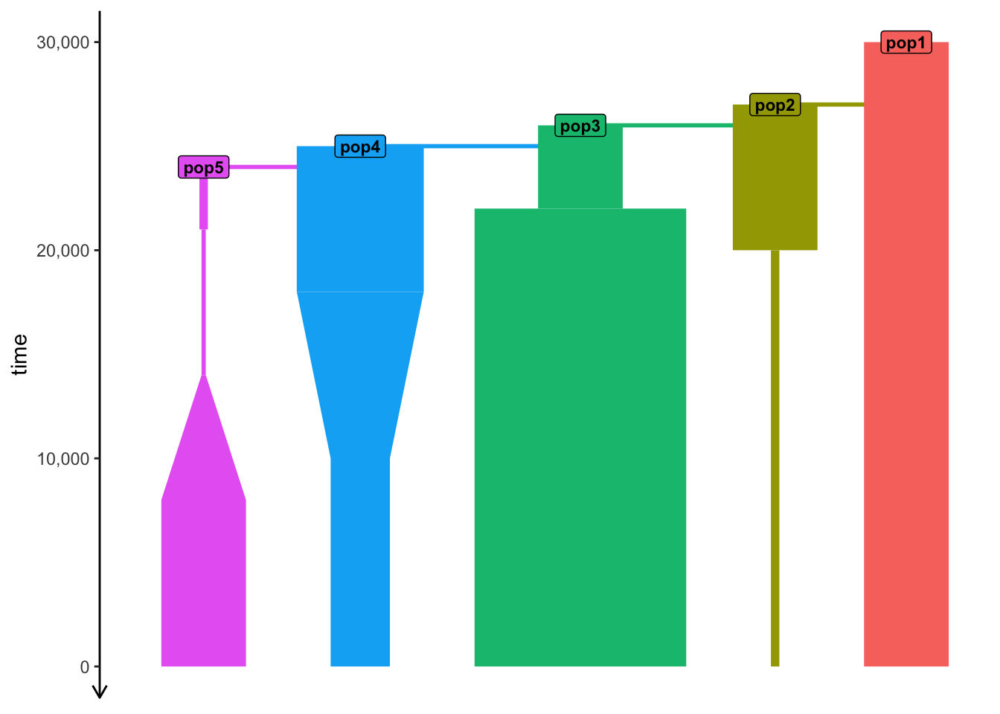

import msprime
demography = msprime.Demography()
demography.add_population(name="A", initial_size=10_000)
demography.add_population(name="B", initial_size=5_000)
demography.add_population(name="C", initial_size=1_000)
demography.add_population_split(time=1000, derived=["A", "B"], ancestral="C")
ts = msprime.sim_ancestry(
sequence_length=10e6,
recombination_rate=1e-8,
samples={"A": 100, "B": 100},
demography=demography
)Introduction to slendr
Why use simulations?
Many problems in population genetics cannot be solved by a mathematician, no matter how gifted. [It] is already clear that computer methods are very powerful. This is good. It […] permits people with limited mathematical knowledge to work on important problems […].
Why use simulations?
- Developing intuition into statistics
- Estimating model parameters
- Ground truth for method development
Developing intuition into statistics

Image from Peter (2016)
Developing intuition into statistics

Image from Lawson et al. (2018)
Estimating model parameters (i.e. ABC)
Image from Wikipedia on ABC
Ground truth for method development

Image from Schiffels and Durbin (2014)
Simulation software
The most famous and widely used are SLiM and msprime.
They are very powerful and (nearly) infinitely flexible.
However, they both require:
- quite a bit of code for complex simulations (“complex” is relative, of course)
- relatively high confidence in programming
Our exercises will focus on the slendr
simulation toolkit for population genetics in R.
But, as a recap, let’s look at msprime and SLiM a little bit…
What is msprime?
A Python module for writing coalescent simulations
Extremely fast (genome-scale, population-scale data!)
You should know Python fairly well to build complex models
Simple simulation using msprime
What is SLiM?
A forward-time simulator
Has its own programming language
Massive library of functions for:
- demographic events
- various mating systems
- natural selection
More than 700 pages long manual!
Simple neutral simulation in SLiM
initialize() {
// create a neutral mutation type
initializeMutationType("m1", 0.5, "f", 0.0);
// initialize 1Mb segment
initializeGenomicElementType("g1", m1, 1.0);
initializeGenomicElement(g1, 0, 999999);
// set mutation rate and recombination rate of the segment
initializeMutationRate(1e-8);
initializeRecombinationRate(1e-8);
}
// create an ancestral population p1 of 10000 diploid individuals
1 early() { sim.addSubpop("p1", 10000); }
// in generation 1000, create two daughter populations p2 and p3
1000 early() {
sim.addSubpopSplit("p2", 5000, p1);
sim.addSubpopSplit("p3", 1000, p1);
}
// in generation 10000, stop the simulation and save 100 individuals
// from p2 and p3 to a VCF file
10000 late() {
p2_subset = sample(p2.individuals, 100);
p3_subset = sample(p3.individuals, 100);
c(p2_subset, p3_subset).genomes.outputVCF("/tmp/slim_output.vcf.gz");
sim.simulationFinished();
}SLiM and msprime are both incredible pieces of software…
… so why slendr?

www.slendr.net
First motivation: spatial simulations!

A broader motivation for slendr
Most researchers are not expert programmers
All but the most trivial simulations require lots of code
Yet, 90% [citation needed] of simulations are basically the same!
create populations (splits and \(N_e\) changes)
specify admixture rates and admixture times
… all this means duplication of code across many projects
- Computing statistics presents even more hurdles
slendr makes this very easy, even for “complex models”
slendr crash course
You can use this document as a cheat sheet as you work on the exercises. It contains everything you need to know about slendr, in a compressed form.
Typical slendr workflow
We will always start our R scripts with this:
library(slendr) # You can safely ignore any potential warnings!
init_env() # This activates the internal Python environmet
Followed by some combination of the following:
- creating populations
- programming \(N_e\) size changes
- encoding gene-flow events
- simulating genomic data
- computing popgen statistics
Creating populations
At minimum, we need its name, size and “time of appearance”:
pop1 <- population("pop1", N = 1000, time = 1)This creates a normal R object! Typing it out gives a summary:
pop1slendr 'population' object
--------------------------
name: pop1
non-spatial population
stays until the end of the simulation
population history overview:
- time 1: created as an ancestral population (N = 1000)Note: Because slendr uses either msprime or SLiM internally for simulation of genomic data, all individuals are assumed to be diploid.
Programming population splits
Splits are defined by providing a parent = <pop> argument:
pop2 <- population("pop2", N = 100, time = 50, parent = pop1)Note: Here pop1 is an R object created above, not a string "pop1"!
The split is again reported in the “historical summary”:
pop2slendr 'population' object
--------------------------
name: pop2
non-spatial population
stays until the end of the simulation
population history overview:
- time 50: split from pop1 (N = 100)Scheduling resize events
- Step size decrease:
Tidyverse-style pipe %>% interface
The following leads to a more concise (and “elegant”) code.
- Step size decrease:
pop1 <-
population("pop1", N = 1000, time = 1) %>%
resize(N = 100, time = 500, how = "step")- Exponential increase:
pop2 <-
population("pop2", N = 1000, time = 1) %>%
resize(N = 10000, time = 500, end = 2000, how = "exponential")Note: You can read (and understand) a() %>% b() %>% c() as “take the result of the function a, pipe it into function b, and then pipe that to function c”.
A more complex model
Using just the two functions introduced so far:
pop1 <- population("pop1", N = 1000, time = 1)
pop2 <-
population("pop2", N = 1000, time = 300, parent = pop1) %>%
resize(N = 100, how = "step", time = 1000)
pop3 <-
population("pop3", N = 1000, time = 400, parent = pop2) %>%
resize(N = 2500, how = "step", time = 800)
pop4 <-
population("pop4", N = 1500, time = 500, parent = pop3) %>%
resize(N = 700, how = "exponential", time = 1200, end = 2000)
pop5 <-
population("pop5", N = 100, time = 600, parent = pop4) %>%
resize(N = 50, how = "step", time = 900) %>%
resize(N = 1000, how = "exponential", time = 1600, end = 2200)Again, each object carries its history!
For instance, this is the summary you will get from the last population from the previous code chunk:
pop5slendr 'population' object
--------------------------
name: pop5
non-spatial population
stays until the end of the simulation
population history overview:
- time 600: split from pop4 (N = 100)
- time 900: resize from 100 to 50 individuals
- time 1600-2200: exponential resize from 50 to 1000 individualsThis way, you can build up complex models step by step, checking things as you go by interacting with the R console.
Gene flow / admixture
We can schedule gene flow from pop1 into pop2 with:
gf <- gene_flow(from = pop1, to = pop2, start = 2000, end = 2200, rate = 0.13)Note: Here rate = 0.13 means 13% migrants over the given time window will come from “pop1” into “pop2”.
Multiple gene-flow events can be gathered in a list:
gf <- list(
gene_flow(from = pop1, to = pop2, start = 500, end = 600, rate = 0.13),
gene_flow(from = ..., to = ..., start = ..., end = ..., rate = ...),
...
)Model compilation
This is the final step before we can simulate data.
compile_model() takes a list of components, performs some consistency checks, and returns a single R object
Model compilation
This is the final step before we can simulate data.
gene_flow argument.
Model summary
Typing the compiled model into R prints a brief summary:
modelslendr 'model' object
---------------------
populations: pop1, pop2, pop3, pop4, pop5
geneflow events: 1
generation time: 1
time direction: forward
time units: generations
total running length: 3000 time units
model type: non-spatial
configuration files in: /private/var/folders/h2/qs0z_44x2vn2sskqc0cct7540000gn/T/Rtmpxr43r9/fileaa7d3ed70579_slendr_model This can be useful as a quick overview of the model we are working with. However, a better way to check a model is…
Model visualization
plot_model(model)
A note on units of time (and its direction)
Sometimes you want to work with time units such as “years ago” (aDNA radio-carbon dated samples, etc.), but you have to convert those to “generations forward” for some software.
slendr helps by making it possible to use whatever time units or time directions are more natural for a particular project.
“Forward time units”
pop1 <- population("pop1", N = 1000, time = 1)
pop2 <-
population("pop2", N = 1000, time = 300, parent = pop1) %>%
resize(N = 100, how = "step", time = 1000)
pop3 <-
population("pop3", N = 1000, time = 400, parent = pop2) %>%
resize(N = 2500, how = "step", time = 800)
pop4 <-
population("pop4", N = 1500, time = 500, parent = pop3) %>%
resize(N = 700, how = "exponential", time = 1200, end = 2000)
pop5 <-
population("pop5", N = 100, time = 600, parent = pop4) %>%
resize(N = 50, how = "step", time = 900) %>%
resize(N = 1000, how = "exponential", time = 1600, end = 2200)
model <- compile_model(
populations = list(pop1, pop2, pop3, pop4, pop5),
generation_time = 1,
simulation_length = 3000, # forward-time sims need an explicit end
direction = "forward"
)We started with pop1 in generation 1, with later events at an increasing time value.
“Forward time units”
plot_model(model) # see time progressing from generation 1 forwards
We started with pop1 in generation 1, with later events at an increasing time value.
“Backward time units”
pop1 <- population("pop1", N = 1000, time = 30000)
pop2 <-
population("pop2", N = 1000, time = 27000, parent = pop1) %>%
resize(N = 100, how = "step", time = 20000)
pop3 <-
population("pop3", N = 1000, time = 26000, parent = pop2) %>%
resize(N = 2500, how = "step", time = 22000)
pop4 <-
population("pop4", N = 1500, time = 25000, parent = pop3) %>%
resize(N = 700, how = "exponential", time = 18000, end = 10000)
pop5 <-
population("pop5", N = 100, time = 24000, parent = pop4) %>%
resize(N = 50, how = "step", time = 21000) %>%
resize(N = 1000, how = "exponential", time = 14000, end = 8000)
model <- compile_model(
populations = list(pop1, pop2, pop3, pop4, pop5),
generation_time = 10 # (10 time units for each generation)
# (we don't need to provide `simulation_length =` because
# "backwards" models end at time 0 by default, i.e. "present-day")
)Same model as before, except now expressed in units of “years before present”.
“Backward time units”
plot_model(model) # see time progressing from "year" 30000 backwards
Same model as before, except now expressed in units of “years before present”.
So we built a model…
… but how do we simulate data from it?
Built-in simulation “engines”
slendr has two simulation “engine scripts” built-in:
- msprime engine (slendr source) – R function
msprime() - SLiM engine (slendr source) – R function
slim()
They are designed to “understand” slendr models, meaning that you can simulate data just with this command:
ts <- msprime(model, sequence_length = 10e6, recombination_rate = 1e-8)No need to write any msprime or SLiM code!
The result of a simulation is a tree sequence (ts)
What is tree sequence?

- a record of full genetic ancestry of a set of samples
- an encoding of DNA sequence carried by those samples
- an efficient analysis framework
Why tree sequence?
Why not VCF or a normal genotype table?
What we usually have

What we usually want
An understanding of our samples’ evolutionary history:
This is exactly what a tree sequence is!
Image from the tskit documentation
The magic of tree sequences
They allow us to compute statistics without genotypes!
There is a “duality” between mutations and branch lengths.
Note: See an amazing paper by Ralph et al. (2020) for more detail.
What if we need mutations though?
What if we need mutations though?
Coalescent and mutation processes can be decoupled!

This means we can add mutations to ts after the simulation using ts_mutate().
Let’s go back to our example model…
plot_model(model)… simulate a tree sequence…
In our script we’ll have something like this:
… and overlay mutations on it
In our script we’ll have something like this:
Note: In some exercises, mutations won’t be necessary. Where we will need them, you can use
ts_mutate() using the pattern shown here.
So we can simulate data
How do we work with this ts thing?
slendr’s R interface to tskit statistics

Allele-frequecy spectrum, diversity \(\pi\), \(F_{ST}\), Tajima’s D, etc.
Find help at slendr.net/reference or in R under ?ts_fst etc.
Extracting names of recorded samples
- We can get individuals recorded in
tswithts_samples():
ts_samples(ts) %>% head(1) # returns a data frame (one row here, for brevity) name time pop
1 pop1_1 3001 pop1- A shortcut
ts_names()can also be useful:
ts_names(ts) %>% head(5) # returns a vector of individuals' names[1] "pop1_1" "pop1_2" "pop1_3" "pop1_4" "pop1_5"- We can get a per-population list of individuals like this:
ts_names(ts, split = "pop") # returns a named list of such vectors$pop1
[1] "pop1_319" "pop1_298" "pop1_984" "pop1_456" "pop1_747"All slendr statistics take individuals’ names as their function arguments.
sample_sets= argument of the respective tskit Python methods (except you use names of individuals directly, not tree-sequence node numbers).
tskit computation – option #1
For a function which operates on one set of individuals, we can first get a vector of names to compute on like this:
# a random selection of names of three individuals in a tree sequence
samples <- c("popX_1", "popX_2", "popY_42")Then we can calculate the statistic of interest like this:
# this computes nucleotide diversity in our set of individuals
df_result <- ts_diversity(ts, sample_sets = list(samples))Note: Wherever you see list(<vector of names>), you can think of it as “compute a statistic for the entire group of individuals” (you get a single number). Without the list(), it would mean “compute the statistic for each individual separately” (and get a value for each of them individually).
tskit computation – option #2
For a function operating on multiple sets of individuals, we want a list of vectors of names (one such vector per group):
# when we compute on multiple groups, it's a good idea to name them
samples <- list(
popX = c("popX_1", "popX_2", "popX_3"),
popY = c("popY_1", "popY_2", "popY_3"),
popZ = c("popZ_1", "popZ_2")
)Then we use this list of vectors in the same way as before:
# this computes a pairwise divergence between all three groups
df_result <- ts_divergence(ts, sample_sets = samples)tskit computation – option #3
For something like \(f\) statistics, the function arguments must be more precisely specified (here A, B, C, not sample_sets):
df_result <- ts_f3(
ts,
A = c("popX_1", "popX_2", "popX_3"),
B = c("popY_1", "popY_2", "popY_3"),
C = c("popZ_1", "popZ_2")
)Doing this manually can be annoying — ts_names() helps by preparing the list of names in the correct format:
# get names of individuals in each population as a named list of vectors
samples <- ts_names(ts, split = "pop")
# use this list directly by specifying which vectors to take out
ts_f3(ts, A = samples$popX, B = samples$popY, C = samples$popZ)Some examples on simulated data
(A tree sequence ts we got earlier.)
Example: nucleotide diversity
Get a list of individuals in each population:
samples <- ts_names(ts, split = "pop")
names(samples)[1] "pop1" "pop2"We can index into the list via population name:
samples$pop1[1] "pop1_1" "pop1_2" "pop1_3"samples$pop2[1] "pop2_1" "pop2_2" "pop2_3"
Compute nucleotide diversity (note the list samples):
ts_diversity(ts, sample_sets = samples)# A tibble: 2 × 2
set diversity
<chr> <dbl>
1 pop1 0.000391
2 pop2 0.0000632Our tree sequence had two populations, pop1 and pop2, which is why we get a data frame with diversity in each of them.
Example: allele frequency spectrum
Get names of individuals:
samples <- ts_names(ts)[1:5]
samples[1] "pop_1" "pop_2" "pop_3" "pop_4" "pop_5"Compute the AFS:
afs <- ts_afs(ts, sample_sets = list(samples))
# we skip the 1st item because it has a special meaning in tskit
afs[-1] [1] 3917 2151 1432 941 740 624 607 587 416 385
plot(afs[-1], type = "b",
xlab = "allele count bin",
ylab = "frequency")
Note: One of the rare examples when a slendr / tskit statistical function does not return a data frame (ts_afs() returns a numerical vector, not a data frame).
More details on tree-sequences
Tree sequence tables
This simulates 2 \(\times\) 10000 chromosomes of 100 Mb:
library(slendr)
init_env(quiet = FALSE)
pop <- population("pop", time = 100e6, N = 10000)
model <- compile_model(pop, generation_time = 30, direction = "backward")
ts <- msprime(model, sequence_length = 1e6, recombination_rate = 1e-8)The interface to all required Python modules has been activated.Runs in less than 30 seconds on my laptop!
Takes only about 66 Mb of memory!
How is this even possible?!
Tree-sequence tables
A tree can be represented by
a table of nodes,
a table of edges between nodes,
a table of mutations on edges

A collection of such tables is a tree sequence.
Note: This is a huge oversimplification. Find more information in tskit docs.
Tree-sequence tables in practice

Nodes:
node time
1 360 871895.1
2 256 475982.3
3 255 471179.5Edges:
child parent
1 256 360
2 255 256
3 69 256Mutations:
id node time
1 69 74 125539.4
2 272 22 242337.9
3 277 22 129474.1Other data formats
Tree sequence is a useful, cutting-edge data structure, but there are many well-established bioinformatics tools out there.
tskit and slendr offer a couple of functions to help integrate their simulation results into third-party software.
Standard genotype formats
If a tree sequence doesn’t cut it, you can always…
- export genotypes to a VCF file:
ts_vcf(ts, path = "path/to/a/file.vcf.gz")- export genotypes in the EIGENSTRAT format:
ts_eigenstrat(ts, prefix = "path/to/eigenstrat/prefix")- access genotypes as a data frame:
ts_genotypes(ts) pos pop_1_chr1 pop_1_chr2 pop_2_chr1 pop_2_chr2 pop_3_chr1 pop_3_chr2
1 12977 0 1 0 0 0 0
2 15467 1 0 1 1 1 1